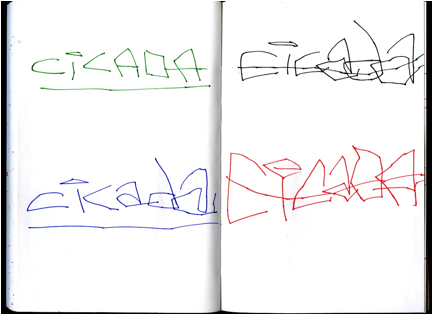
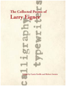

On
Robert Grenier’s ‘Drawing Poems’:
“CICADA
/ CICADA / CICADA / CICADA”
(Thinking
[Writing/Making] Things)
The word
“idea” comes from the Greek eidow which
means to see, face, meet, be face-to-face.
We stand
outside of science. Instead we
stand before a tree in bloom for example – and the tree stands before
us. The tree faces us. The tree and we meet one another, as the
tree stands there and we stand face to face with it. As we are in this relation of one to the
other and before the other, the tree and we are. This face-to-face meeting is not, then,
one of these “ideas” buzzing about our heads. . . . We come and stand – just as we
are, and not merely with our head or our consciousness – facing the tree
in bloom, and the tree faces, meets us as the tree it is. Or did the tree anticipate us and come
before us. Did the tree come first
to stand and face us so that we might come forward face-to-face with it?
Martin
Heidegger, What Is Called Thinking
On April 23 , 2011 (which happens to have been Shakespeare’s
birthday,
a fact noted several times in what followed) Robert
Grenier and I sat
down in my living room in Bolinas to record what became
the fourth of
four conversations (“On Natural Language”), all four of
which together
with “images of each of
the drawing poems under consideration” can be
found at PennSound. What follows here is a reconsideration of
the first of
the drawing poems (“CICADA / CICADA / CICADA / CICADA”)
that we talked
about that rainy afternoon, beginning with some further
thinking about
what it was that we were talking about. Here is a scanned copy of the
poem (as it appears on PennSound):

The poem is a visual shape in letters of the “sound
pattern” that RG
had heard several years before, one summer in Long Island,
which had
been ‘conserved’ (in his memory), then brought forward
(mysteriously,
‘once again’) to his attention as ‘event’ (not “emotion”
only but the
whole circumstance being “recollected in tranquility”);
which reminds
me of stepping off the ferry boat onto another island
(Corfu) in 1972,
hearing the sound of cicadas going on (and on and on) in
the hot dry
air of a summer afternoon. The letters-made-into-words of RG’s poem
‘visualize’ the sound of those bugs – i.e.,
‘transcribe’ it, ‘enact’
it, ‘perform’ it, bring it into the present moment of
seeing-reading-
hearing the poem itself (as it exists) on the page and/or,
when read
aloud, in the air.
The poem as an articulation of a ‘comprehensive’ sound
event perceived
in Long Island is completely different from that
sound event – indeed,
how could drawn letters possibly be ‘the same’ as (or
anything ‘like’)
‘real’/’actual’ bugs in that physical landscape? –
but it also becomes
it (on the page, in the air), the sound of those
heard but unseen bugs
in that summer scene ‘translated’ here into hand-drawn
letters in four
colors of ink (green, blue, black, red), seen but not
heard unless the
poem is read aloud, at which point the sound of cicadas in
Long Island
(‘vraiment’) ‘becomes’ these letters – “CICADA CICADA CICADA CICADA” –
which transform the language of bugs into our human
language, each one
of these languages conveying ‘meaning’ to those for whom
it is made –
bugs hearing in the sounds they make, one presumes, some
‘message’; we
also seeing and/or hearing something of note in the
poem/name – but is
it a ‘message’? And if so, what does it ‘say’ (or ‘mean’ or ‘import’)?
(It seems, at least at first, that nothing is ‘said’ by
this repeating
of the name of a bug four times; not only is this
[whatever it is] not
a ‘poem’ in any ordinary understanding of that word (no
speaker and no
event being interpreted/presented with significance), it
is not even a
propositional ‘statement of fact’ – nothing is
asserted, grammatically
speaking, since there is no sentence.)
Could it be that the thinking here of that sound event on
Long Island,
the idea of it ‘realized’ in these hand-drawn letters on
the page, has
pushed it out into space (onto the two-dimensional space
of this page)?
Could it be that one can write things themselves –
this ‘thing’ (sound
of cicadas) written into existence, coming into being in
these letters?
Could this be one possible instance of the kind of thing
Heidegger was
‘testifying to’ (possibly also having had some experience
of something
‘like it’) when he said that “The tree and we meet one
another, as the
tree stands there and we stand face to face with it,” that
tree (those
cicadas) made here to exist/‘persevere’ in language? Could it be that
an image (on the page) maintains itself (as image)
in relation to some
previously heard sound pattern, which was itself equally
‘experienced’?
Could it be that a word in English (“cicada”) identical to
the word in
Latin for “A homopterous insect with large transparent
wings living on
trees or shrubs; the male . . . noted for its power of
making a shrill
chirping sound, much appreciated by the ancient Greeks and
Romans” (as
the OED tells us) might be, in naming it,
the ‘same’ as thing it names?
What might it be/mean to write the thing
itself? And what might it be
(or mean) to read it (on page or screen, for instance) or
hear it read
aloud? Could
these drawn letters (arranged as materials, on the field
of a page) create those bugs, make their sounds
(for a reader) ‘become’
present, actually audible?
The image on the page (made of letters) seems
abstract, whereas sounds
of cicadas on Long Island or Corfu (made by the vibration
of membranes
on the underside of their abdomens) are physical, and can
be perceived
by the ear as such: those (male) bugs on those trees and shrubs (over
there in the landscape) calling their mates perhaps . . .
or asserting
their existence, or claiming a place in the territory, or
joining in a
sounding/music all are making (at least four of them) for
the ‘joy’ of
participating, hearing each other’s
cicada-communal-existence-together?
(We don’t really know what they’re doing, can only guess
what it is to
them participating in such communal sounding.) But the four words are
also physically in space: letters drawn by hand in four colors of
ink
which ‘position’ four of those bugs in the space of two
pages, or on a
computer screen; each one spelled “CICADA” but written
differently (in
in different-colored ink but also with different-looking
letters, this
green “C” in the top left not ‘made the same’ as that
black one across
from it, or that blue one below it, or the larger red one
that appears
diagonally across from it in the bottom right); the ground
of the page
(completely white) analogous to (i.e., ‘like’) that
landscape (unseen,
at least here, the offstage action of the landscape in
which bugs were
once sounding the air) made here into a whiteness of
background behind
the words of a poem that (here/themselves) are
‘performing’ that sound.
Which is also to say that these drawn letters of the poem,
even though
they were occasioned by memory of hearing cicadas on Long
Island, here
create a present situation (made of letters), which
is happening ‘now’
(in the writing itself) and remains a possible future
present occasion
for the (unknown) reader who may ‘activate’ it –
i.e., this writing is
not only the conserving of a past event.
What would this poem be if it weren’t drawn by hand? Could it be made
by pressing keys on a computer or typewriter (perhaps an
IBM Selectric,
such as RG used to type the poems in Sentences)? How would it look in
black ink only, typed rather than ‘scrawled’? What would be ‘lost’ in
that translation (e.g., in the “rough translation” that
appears beside
it on the PennSound page), if anything? (A beginning ‘answer’ to this
last question might include, but not be limited to, the
following four
structural features of the
drawing poem [which one might experience in
‘real’ present time; might be of
interest in themselves as ‘forms’ and
in relation to the drawing
poem’s ‘performance’ of cicadas]: note for
instance the triangular green,
triangular blue, rectangular black, and
“e”-shaped red ‘dot’ above each of the four, also
differently ‘shaped’
lower case “i”’s in “CICADA”; the green and blue somewhat
‘horizontal’
lines below the green and blue letters in “CICADA” on the
verso echoed
in the somewhat less horizontal, asymmetrically curved
lines that seem
to scratch across the surface of the black and red letters
[“CICADA”],
perhaps ‘like that branch’ of the tree or shrub on which
each of those
two bugs now appears to sit; a diagonal
symmetry/asymmetry of an upper
case “ADA” in the top left green “CICADA” in relation to
an upper-plus-
lower case “aDa” in the bottom right red “CICADA,” which
is matched by
an apparent symmetry of lower case “ada”s in the blue and
red “CICADA”
positioned on the bottom left and top right of the two
facing pages [I
say “apparent symmetry” because the closer I look at these
letters the
more unlike they seem to be: the ascending line of the blue “d” which
slants up to the left from the almost squared-off corners
of the lower
‘normally curved’ part of the “d” being almost straight,
the ascending
line of the black “d” curving up to the left from an also
curved shape
of the lower part of that letter; each black “a” seemingly
larger than
each corresponding blue “a”]; a strange almost-progression
in the four
words [from top left to bottom right] in which the letters
seem to get
increasingly more jagged, gnarled, or twisted – the
“C”s, all eight of
them [grouped into four sets of a palindrome, “C-I-C,”
matched by four
other sets of a second palindrome, equally unnoticed in
the same word,
“A-D-A”] changing from clean green curve followed by a
45-degree angle
in the top left [green] “CICADA”; to a less cleanly curving
and angled
pair of “C”s in the bottom left [blue] “CICADA”; to the
pair of three-
sided ‘rectangular’ “C”s in the top right [black]
“CICADA”; to a final
much larger pair of trapezoidal “C”s in the bottom right
[red] “CICADA”
which appears [because of its increased size and greater
‘angularity’?]
almost ready to explode off the page, as if the sound of
this “CICADA”
had grown beyond all measure or restraint, even to the
‘breaking point’
[but of what? what will happen on the far side of that
point? will one
enter the cicadas’ world? be transformed into a bug?],
letters-drawing-
bugs getting stranger and stranger, sound appearing to get
louder/more
intense – perhaps because the last, bottom-right
word-bug is literally
bigger but also because, wherever one starts to read, an
experience of
reading builds up a memory of more than the one “CICADA”
one is seeing,
plus also the fact that one can see all four words
at once ‘translates’
into a louder continuum of the sound of all four bugs
together.)
The name itself, “CICADA” – whose second syllable
appears in “cadence”
(which is not etymologically connected to the name for
this bug), that
rhythmic, flowing/falling sequence of sounds unfolding in
time – words,
music, or nature itself: “That strain again. It had a dying fall” as
Orsino says at the beginning of Twelfth Night,
wanting to hear again a
music that “came o’er my ears like the sweet sound/ That
breathes upon
a bank of violets” – a physical thing made of
letters which become the
analogue of not only the bug but the sound it makes (the
sound we hear
when we hear the letters “CICADA” read aloud; the sound we
can imagine
when we see those same letters on the page), takes on
something of the
mysterious power of a fetish: ‘equal’ to the thing itself, it appears
to become it – the bull in the cave painting
at Lascaux and the cicada
in the poem going hand in hand in demonstrating the
condition of ‘real’
bull and cicadas, painter and poet noticing then noting
what otherwise
would disappear, each of them seeking to preserve one’s
fleeting human
experience (perhaps), each of their respective works a
‘form of belief’
testifying to the ‘fetish power’ of an arrangement of
certain lines or,
in this case, letters to ‘stand in’/’stand for’/’be’
something utterly
different – otherwise, only hand-drawn lines made of
‘paint’ (charcoal
or four colors of ink). And, what is more, as hand-drawn lines
(paint
on cave wall, arrangement of letters on page) each of them
making some
actual thing happen ‘now’ . . . this being what a
fetish is ‘for’ – to
accomplish something (by ‘magic’) in the present;
potentially, in this
case, to make (’new’) bugs exist (and sound) and in the
cave paintings
to summon ‘actual beasts’ into the cave, possibly to be
worshipped (in
themselves) or to bring about success in the hunt.
Read aloud, the fact that there are two different ways of
pronouncing
the first “A” of “CICADA” (long and short, i.e., “a” and
“ä”) sets in
motion a variety of alternating rhythms/rhythmic interactions
zinging
between the sounds of any two bugs on the two pages, all
the possible
interactions constructing a ‘force field’ of sound almost
‘equivalent’
(perhaps) to the one made by cicadas in Long Island (a
“faire fielde
full of folke,” as Langland said in Piers the Plowman,
referring not
to bugs but rather “alle maner of men”). It might also be useful to
note that any of the several possible
articulations/sounding-outs of
the series of four “CICADA”s will resemble an amphibrachic
tetrameter
line (compare Browning’s “And into the midnight we
galloped abreast”),
not that this poem is attempting to echo such a “classical
meter” of
course, but rather to ‘realize’ in these letters the
sounds made by,
and positions occupied by, cicadas (which themselves also
exist in a
‘measure’).
Notice also that, despite its apparent ‘minimalism’ (i.e.,
repeating
the word “CICADA” four times), the poem invites a larger ‘metaphoric’
reading, one made possible by the persistent use of the
name “CICADA”
(going back to the Latin word for such bugs, and to what
other names
for such bugs before that?) in ‘historical time’; a
reading that may
lead someone to experience the strangeness of
cicada-giving-birth-to-
“CICADA,” ancient existence of life forms on earth
(and of the earth,
and the cosmos itself) thereby also being ‘summoned’ by a
repetition
of “CICADA.” I
am thinking of how the poem points to a time that is
prior to the time in which one reads it (time
often being ‘a subject’
in RG’s work – think of the poem in Sentences,
which we talked about
in one of the earlier conversations on PennSound, “time to
go to the
laundry again soon”) and of how in reading and thinking
about it one
may well experience a series of metonymic
relations. That is to say,
any way of reading through these four words produces
an amphibrachic
tetrameter line (x/x x/x x/x x/x) in the present time of anyone’s
engagement with the poem, which can be understood to
‘stand for’ the
ninety-plus generations (2,500-plus years?) of human use
of the word
“cicada” that still persists today (the classical measure
going back
to the Greek root suggests this reading) so that
one can imagine one
hears literally millions of bugs, and millions of human
soundings of
the word “cicada,” reverberating through all of those
years on earth.
Beyond that, the time humans have used the word “cicada”
(2,500-plus
years?) can be understood to ‘stand for’ all the years on
earth when
humans/proto-humans had other words for cicadas
(and all such sounds
made by cicadas happening over that time). And beyond that, one can
think of ‘historic time’ (the time when humans had words
for cicadas)
as a metonym for millions of years (how ‘old’ is this bug anyway, in
its present ‘shape,’ capable of making such sounds?),
“cicadas” (but
we can’t even call them that, since there weren’t any
humans to name
them then) going on in their utterly mysterious
sounding/interaction
with each other – beyond our knowing, or any
possible ‘knowledge’ of
such extraordinary beings. And beyond all of that, the existence of
cicadas as a (possible) metonym for all of life (and time)
on earth.
But there isn’t just one bug in RG’s poem but four,
arranged in and as
a grid of words-made-of-letters, composed in the four quadrants
of two
facing pages of a black notebook – four words like
the four lines of a
quatrain:
CICADA
CICADA
CICADA
CICADA
each of whose lines both is and is not the same. (How strange to make
a poem out of one word ‘repeated’ four times – talk
about minimalism!)
The poem takes place on the field of the page in which
letters are put,
bugs and letters arranged in that landscape, the page an
analog in two
dimensions to the three-dimensional world in which the
bugs exist. To
place words on the field of the page – page as place
to work, field in
which the action of the poem takes place, the poem a
“field of action”
as Olson put it, ‘marks-in-space’ as Eigner’s
“calligraphy/typewriters”
suggests:

– is to attempt to build a verbal ‘equivalent’ to bugs
in space. Four
bugs are there on the page, vying with each others’
colors; and in the
air, when the poem is read aloud (making sounds). They are also there
(RG testifies, in the April 23, 2011 conversation) on
these two facing
pages as an ‘offering’ to the actual bugs on Long Island
(which are no
longer there, exist only here on this page – which
came about at least
in part because of RG’s idea of them, his memory of
them made physical
here, as letters-made-into-words). (The white space behind the images
is like offstage action, the landscape in which the action
of the bugs
[making their sounds] originally took place – and
once was heard.) You
can read these four words-made-of-letters any way you want
– across or
down or diagonally you will get to all four eventually,
seen and heard
as living presences on pages that reenact where cicadas were,
in space
– and also where they still are now, for a
reader who ‘activates’ them.
(Isn’t this what Heidegger was asking about in What is
Called Thinking
– how to position oneself to discover the
possibility that words might
‘say’ what is going on? – and out of such, to
construct a ‘true name’?)
Their symmetry there (in the space of the page) is
‘equivalent to’ the
unseen, bygone asymmetry of a location in nature
(on Long Island); and
as such, in the presence of such potentially sonic
materials, we still
may hear what Morton Feldman once called (speaking of the
structure of
one of Webern’s tone-rows) their “intervallic logic,” a
logic of sound
made by bugs in nature ‘played’ as words-made-of-letters
drawn by hand
here (a music that in former times one might have called
“the music of
the spheres,” but here might be more simply called “just
cicada sound,”
– sound made possible in the attempt to write [i.e.,
testify to, as in
ancient practice] ‘it’).
Many thanks to Robert Grenier for his ongoing
‘conversation.’
|